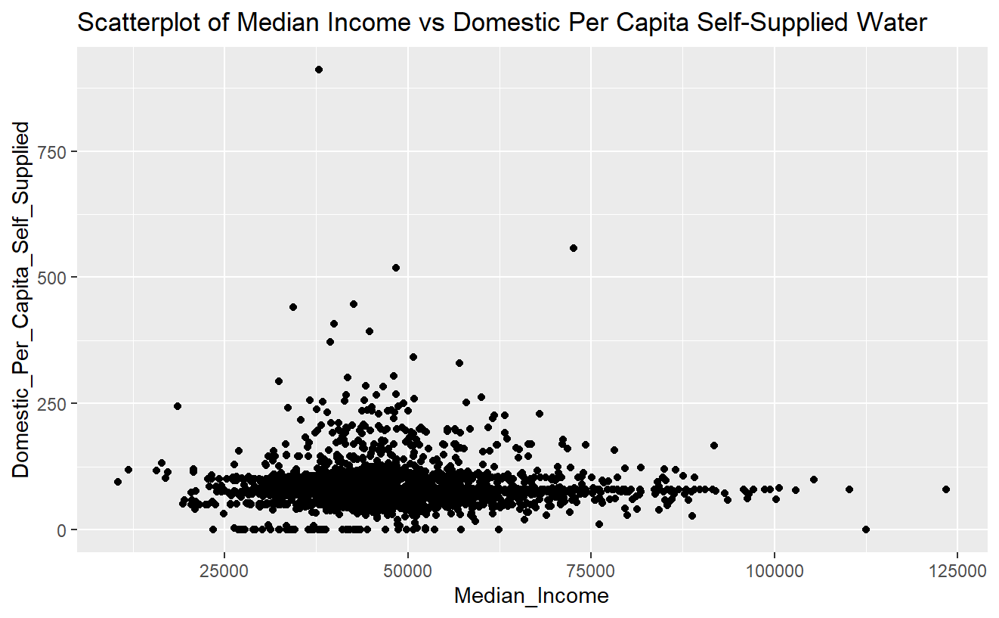
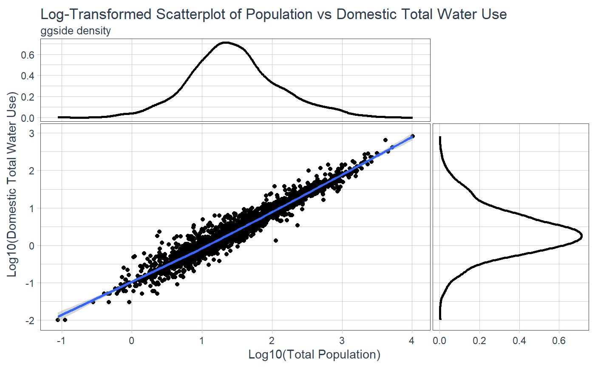
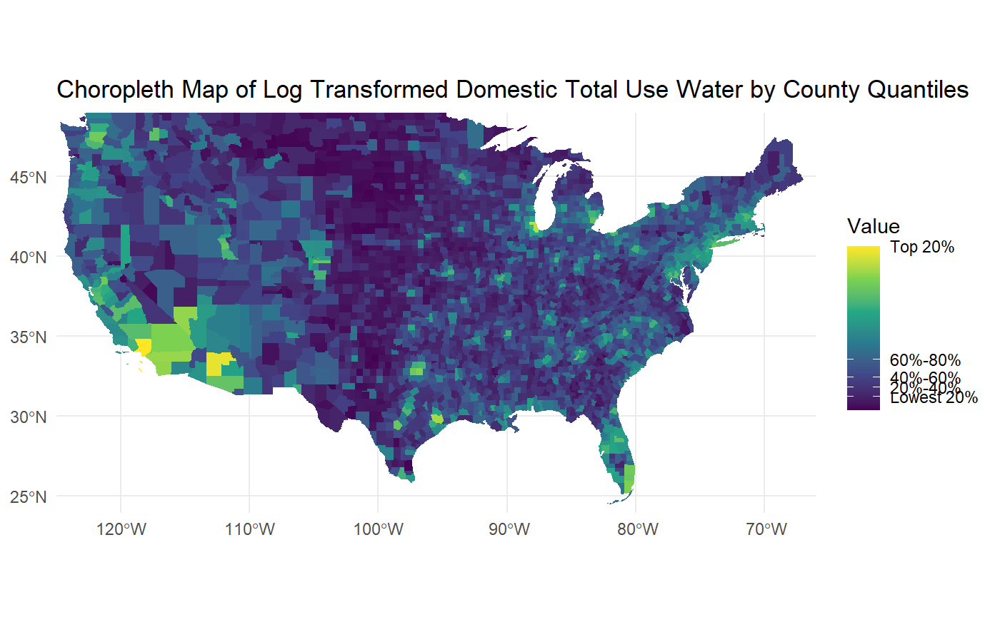
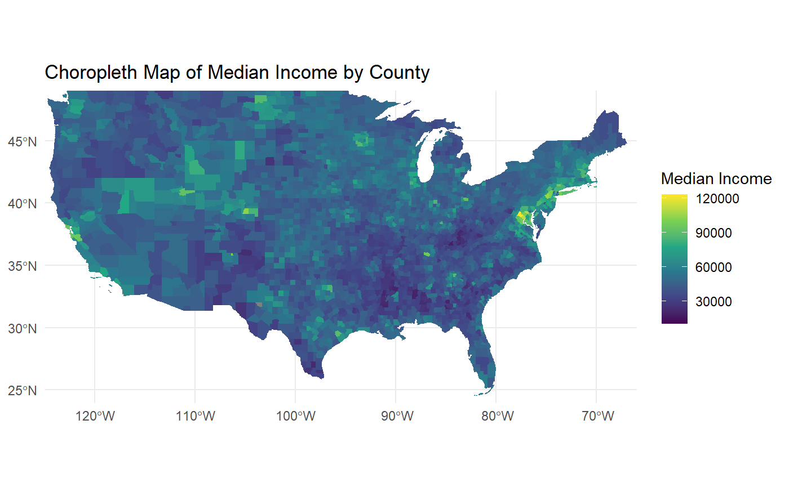

Introduction and Research Question
Water is an essential resource that underpins all aspects of human and environmental systems. Given the diversity of water usage across different sectors, it is important to understand the patterns and determinants of water consumption to ensure sustainable management.
This post examines how water use per capita relates to household income in the U.S. during 2015, focusing on domestic use and briefly exploring other sectors in water use as well. The question: How is per capita water use in the domestic sector associated with median household income across U.S. counties in 2015?
Data Sources
For water data, here
For income data, Census Data on Income and Poverty. I chose the American Community Survey 5-year estimates for the analysis as the 5-year estimate gives more reliable data for all US counties, unlike the 1-year estimate as they provide the most current data but have a smaller sample size.
Data Cleaning Summary
Imported the two datasets without turning text into factors, making it easier to work with text.
Standardized FIPS codes to five digits for consistent merging.
Changed median income data from text to numbers and averaged the upper and lower bounds for a clear income value.
Chose only the necessary columns and renamed them for better understanding and use.
Cleaned up geographic data by detaching state names from county names and fixing FIPS code formats.
Combined the income and water usage data based on FIPS code for a county-level comparison.
Some issues encountered, such as:
- Different formats for FIPS codes, which we fixed by changing all to integer format.
Methodology
Wateruse:
Check the data for accuracy and then analyze whether household income is related to how much water individual use for domestic use and other sectors.
Using scatter plots and column plots to visually explore relationships between median household income and water use in domestic, industrial, and irrigation sectors.
Generated stacked column plots to display the per capita consumption across the different sectors, providing a comparative perspective of water use.
Make the data less skewed and easier to understand, especially on the maps, we transformed the figures using a logarithmic scale.
Choropleth Map Creation:
Developed choropleth maps to geographically represent domestic water use on a county level, using log transformation for data normalization and better visual clarity and another map to visualize household median income.
The maps serve to illustrate the spatial distribution of water consumption in relation to median household income across U.S. counties.
Initial Findings
The relationship between median income and other sectors has not been clearly established. For example, in examining the scatterplot of median income against domestic total self-supplied water use across U.S. counties, the data distribution lacks a linear pattern, suggesting that higher income does not necessarily correspond with greater domestic water usage.

This scatterplot indicates there’s a clear upward trend showing that as population size increases, water use also goes up. This is shown in the way the data points line up in a straight line pattern, which is also highlighted by the blue line drawn through the data.

Although a strong relationship between the variables has not been established, the following two plots offer a visual comparison, allowing a chance to see the geographic distribution of both domestic total use and household median income.


Observations based on the maps
The water use map displays a wide range of differences among counties, with certain areas showing much higher or lower use than others. In contrast, the median income appears to be more evenly spread out over larger regions without such distinct variations.
Despite no clear linear relationships in the previous scatterplots, certain regions, especially in the Northeast and parts of the West Coast, show a pattern where higher water use aligns with higher median incomes. This might mean that wealthier areas have greater water consumption, possibly because of larger homes or more water-demanding lifestyles. On the other hand, central areas of the country tend to have both lower water use and lower median incomes, which could relate to factors like less dense populations, different types of jobs, and varying access to water resources.
It is worth noting that the water use map uses quantiles, meaning it groups counties into categories that each contain the same number of places, which makes it easier to see relative high and low water use areas. The income map, using a continuous scale, reflects the actual income levels as they are, showing a more subtle and detailed picture. This approach for income might offer a deeper insight but could also make it harder to quickly identify where incomes differ greatly.
Limitations
The data includes a variety of areas like cities, countryside, and industrial zones, which might use water differently, regardless of income levels.
There’s a wide span of incomes, and there doesn’t seem to be a clear water use trend for the wealthier or less wealthy areas.
There could be other variables not included in the analysis that more significantly affect total water use, such as agricultural policies, the presence of water-saving technologies, or weather patterns.